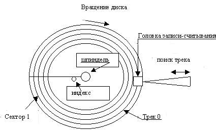

Главная характеристика устройств - ёмкость хранения, измеряемая в килобайтах, мегабайтах, гигабайтах и терабайтах.
Устройства внешней памяти могут иметь сменные или фиксированные
носители информации. Применение сменных носителей позволяет хранить
неограниченный объём информации, а если носитель и формат записи стандартизованы,
то они позволяют и обмениваться информацией между компьютерами. Существуют
устройства с автоматической сменой носителя.
Важнейшими общими параметрами устройств являются время доступа, скорость
передачи данных и удельная стоимость хранения информации.
Время доступа определяется как усреднённый интервал от выдачи запроса
на передачу блока данных от фактического начала передачи.
Скорость передачи данных определяется как производительность обмена
данными, измеряемая после выполнения поиска данных.
Определение удельной стоимости хранения информации для накопителей с
фиксированными носителями пояснения не требует. В случае сменных носителей этот
показатель интересен для собственно носителей, но не следует забывать и о цене
самих накопителей, которую тоже можно приводить к их ёмкости.
По отношению к корпусу компьютера устройства могут быть внутренними и внешними.
Внутренние устройства помещаются специально в трёх- или пятидюймовые отсеки корпуса компьютера и питаются от его же блока питания. В описании корпусов компьютеров отсеки также подразделяются на внешние и внутренние, но они различаются лишь тем может ли выходить передняя панель устройства, установленного в отсек, на лицевую панель копуса или нет. Внешние устройства помещают в отдельный корпус, а питаются они от собственного блока питания или перехватывают питание +5 В от разъёма клавиатуры компьютера. Внешнее исполнение имеют как малогабаритные портативные устройства, так и особо крупные дисковые массивы.[2]
Несмотря на большое разнообразие физических носителей и принципов записи и
считывания информации, дисковые накопители имеют своей основой механизм,
схематически представленный на рисунке 1.[2]

Слой носителя информации - магнитный, оптический или какой-либо иной - нанесён на рабочие поверхности дисков. Диски вращаются с помощью двигателя шпинделя, обеспечивающего требуемую частоту вращения в рабочем режиме. На диске имеется индексный маркер, который, проходя мимо специального датчика, отмечает начало каждого оборота диска. Информация на диске располагается на концентрических треках (дорожках), нумерация которых начинается с внешнего трека (Track 00). Каждый трек разбит на секторы фиксированного размера. Сектор и является минимальным блоком информации, который может быть записан на диск или считан с него. Нумерация секторов начинается с единицы и привязывается к индексному маркеру. Каждый сектор имеет служебную область, содержащую адресную информацию, контрольные коды и некоторую другую информацию, и область данных, размер которой традиционно составляет 512 байт. Если накопитель имеет несколько рабочих поверхностей (на шпинделе может быть размещён пакет дисков, а у каждого диска могут использоваться обе поверхности), то совокупность всех треков с одинаковыми номерами составляет цилиндр. Для каждогй рабочей поверхности в накопителе имеется своя головка, обеспечивающая запись (если это позволяет накопитель) и считывание информации. Головки нумеруются начиная с нуля. Для того, чтобы произвести элементарную операцию обмена - запись или чтение сектора, -шпиндель должен вращаться с заданной скоростью, блок головки должен быть подведён к требуемому цилиндру, и только тогда требуемый сектор подойдёт к выбранной головке, начнётся физическая операция обмена данными между головкой и блоком электроники накопителя. Для записи информации на носитель и её считывания используются различные методы частотной илифазовой модуляции, позволяющие кодировать и декодировать двоичную информацию в соответствии с природой носителя информации. Контроллер накопителя выполняет сборку и разборку блоков информации (секторов или целых треков), включая формирование и проверку контрольных кодов, осуществляет модуляцию и демодуляцию сигналов головок и управляет всеми механизмами накопителя.[3]
| Номер функции (АН) | Назначение |
|---|---|
| 00h | Reset Disk System - сброс контроллера |
| 01h | Read Status of Last Operatin - чтение состояния последней операции |
| 02h | Read Desired Sectors into Memory - чтение сектора с диска в память |
| 03h | Write Desired Sectors from Memory - запись секторов из памяти на диск |
| 04h | Verify Desired Sectors - верификация секторов (холостое чтение без записи в память) |
| 05h | Format Desired Track - формирование трека |
| 08h | Read Drive Parameters - получение параметров диска |
| 09h | Inetealize Drive Pair Characteristics - инициализация таблиц параметров диска |
| 0Ah | Read Long - "длинное" чтение |
| 0Bh | Write Long - "длинная" запись |
| 0Сh | Seek - поиск цилиндра |
| 0Dh | Alternative Disk Reset - альтернативный сброс (не затрагивая контроллера дискет) |
| 10h | Test Drive Ready - проверка готовности |
| 11h | Recalibrate - рекалибровка |
| 14h | Controller Internal Diagnostics - диагностика контроллера диска |
| 15h | Read DASD Type - получение типа диска |
| 16h | Diskette Change Line Status - проверка статуса смены диска |
| 17h | Set Diskette Type for Format - установка типа диска (для форматирования) |
| 18h | Set Media Type for Format - установка типа носителя (для форматирования) |
| 20h | Get Media Type - получение типа установленного носителя |
| 24h | Set Multiple Mode - установка параметров режима многосекторного обращения |
| 25h | Indentify Drive ATA - индентификация накопителя (только для ATA-дисков) |
| 41h-44h | Резерв для Extended Disk-Access Support - поддержка расширенного доступа к диску |
| 45h-46h | Резерв для Removable-Media Control Support - поддержка управления сменой носителя |
| 47h-48h | Резерв для Extended Disk-Access Support - поддержка расширенного доступа к диску |
| 49h | Резерв для Removable-Media Control Support - поддержка управления сменой носителя |
| Код (АН) | Ошибка |
|---|---|
| 00h | No error - нет ошибок |
| 01h | Invalid diskette parameter or function not sopported - неверные параметры дискеты или неподдерживаемая функция |
| 02h | Address mark not found -не найден адресный маркер |
| 03h | Write-protect error - попытка записи на защищённый диск |
| 04h | Requested sector no found - сектор не найден |
| 06h | Diskette change line active - обнаружен сигнал смены носителя |
| 08h | Read Drive Parameters - получение параметров диска |
| 09h | Inetealize Drive Pair Characteristics - инициализация таблиц параметров диска |
| 0Ah | Read Long - "длинное" чтение |
| 0Bh | Write Long - "длинная" запись |
| 0Сh | Seek - поиск цилиндра |
| 0Dh | Alternative Disk Reset - альтернативный сброс (не затрагивая контроллера дискет) |
| 10h | Test Drive Ready - проверка готовности |
| 11h | Recalibrate - рекалибровка |
| 14h | Controller Internal Diagnostics - диагностика контроллера диска |
| 15h | Read DASD Type - получение типа диска |
| 16h | Diskette Change Line Status - проверка статуса смены диска |
| 17h | Set Diskette Type for Format - установка типа диска (для форматирования) |
| 18h | Set Media Type for Format - установка типа носителя (для форматирования) |
| 20h | Get Media Type - получение типа установленного носителя |
| 24h | Set Multiple Mode - установка параметров режима многосекторного обращения |
| 25h | Indentify Drive ATA - индентификация накопителя (только для ATA-дисков) |
| 41h-44h | Резерв для Extended Disk-Access Support - поддержка расширенного доступа к диску |
| 45h-46h | Резерв для Removable-Media Control Support - поддержка управления сменой носителя |
| 47h-48h | Резерв для Extended Disk-Access Support - поддержка расширенного доступа к диску |
| 49h | Резерв для Removable-Media Control Support - поддержка управления сменой носителя |
Накопители на гибких магнитных дисках (НГМД), или дискетах, применялись с
первых моделей РС, у которых они были единственным средством хранения и переноса
информации. Стех пор эти устройства претерпели относительно небольшие изменения
- размер дискеты уменьшился почти в 2 раза, а ёмкость возросла всего на порядок.
По сравнению с другими компонентами прогресс невелик. Английское сокращённое
название НГМД - FDD (Flexible или Floppy Disk Drive).
Накопители на гибких магнитных дисках (НГМД), или дискетах, применялись с
первых моделей РС, у которых они были единственным средством хранения и переноса
информации. Стех пор эти устройства претерпели относительно небольшие изменения
- размер дискеты уменьшился почти в 2 раза, а ёмкость возросла всего на порядок.
По сравнению с другими компонентами прогресс невелик. Английское сокращённое
название НГМД - FDD (Flexible или Floppy Disk Drive).
Первые накопители использовали дискеты диаметром 5,25 дюймов (133 мм). Теперь
такие дискеты не используют. По продольной плотности записи различают устройства
обычной и высокой плотности записи, позволяющие записывать на
треке 9 или 15 секторов соответствнно (360 Кбайт и 1,2 Мбайта). Более высокая
плотность записи данных сопровождается и повышенной скоростью их передачи.
Вместе с машинами класса АТ появились накопители для дискет диаметром 3,5 дюйма.
Эти дискеты используют 80 треков. По продольной плотности существуют три
градации, обеспечивающие хранение 9, 18 или 36 секторов на треке в стандартном
режимеформатирования с ёмкостью 720 Кбайт, 1,44 и 2,88 Мб соответственно.
Дискеты различаются по диаметру диска и плотности хранения информации. Их
параметры обычно входят в обозначение типа.
По плотности записи (Density) различают следующие типы:
В отличие от накопителей на гибких дисках и их контроллеров, жёстко
стандартизованых и поэтому легко конфигурируемых, в РС прииеняется множество
типов накопителей на жёстких дисках, их интерфейсов и контроллеров, различающихся
и способоми конфигурирования.
В отличие от накопителей на гибких дисках и их контроллеров, жёстко
стандартизованых и поэтому легко конфигурируемых, в РС прииеняется множество
типов накопителей на жёстких дисках, их интерфейсов и контроллеров, различающихся
и способоми конфигурирования.
Накопители на жёстких магнитных дисках (НЖМД), они же HDD (Hard Disk Drive),
появились с машинами PC/XT. Первые накопители имели интерфейс, являющийся, по
сути, расширением интерфейса НГМД, и подключались к специальной плате
контроллера с модулем дополнительной BIOS, распространяющим функции дискового
сервиса на жёсткий диск. Вся информация о жёстких дисках хранилась на плате
контроллера. В машинах класса АТ поддержку стандартного контроллера включали в
системную BIOS, а параметры используемых жёстких дисков стали хранить в памяти
CMOS.
Традиционные версии BIOS поддерживают до двух накопителей на
жёстких дисках и хранят их параметры в ячейках памяти CMOS. Расширенные
версии BIOS для современных двухканальных контроллеров АТА поддерживают
4 жёстких диска и хранят их параметры. Для каждого диска хранится
номер его типа (1-46), соответствие номеров типов геометрическим параметрам
(число цилиндров, головок и секторов) стандартно для большинства версий BIOS,
хотя бывают и исключения. Тип 47 (USER TYPE) позволяет задать произвольные
параметры, он используется и при автоматическом определении параметров
дисков IDE опций IDE Autodetection утилиты BIOS Setup. Для дисков с
различными интерфейсами тип задаётся по-разному.
Для дисков с интерфейсом ST-506/412 обычно задавали соответствующий номер типа
с фиксированными параметрами, практически все существовавшие накопители
укладывались в стандартную таблицу. При желании те же параметры можно было
ввести и через тип 47.
Для дисков ESDI или SCSI в поле типа указывается NONE, и их
контроллер, обязательно имеющий расширение BIOS, сам определяет параметры
установленных накопителей.
Для дисков IDE задаются логические параметры геометрии, которые транслируются
в физические внутренним контроллером диска. Параметры трансляции могут изменятся
программно, функция IDE Autodetect (BIOS Setup) определяет логические
параметры по умолчанию. По этой причине диск, отформатированный с фиксированым
типом (1-46), по функции IDE Autodetect может получить иное сочетание
параметров. С такой ситуацией часто сталкиваются при замене системной платы:
на старой плате тип диска в CMOS посмотреть забудут, заменят системную плату,
автоматически определят тип диска, а операционная система загружаться откажется.
В данной ситуации, если нет желания переформатировать диск, следует найти
и использовать номер ранее используемого фиксированного типа.
Накопители на жёстких магнитных дисках (НЖМД), они же HDD (Hard Disk Drive),
появились с машинами PC/XT. Первые накопители имели интерфейс, являющийся, по
сути, расширением интерфейса НГМД, и подключались к специальной плате
контроллера с модулем дополнительной BIOS, распространяющим функции дискового
сервиса на жёсткий диск. Вся информация о жёстких дисках хранилась на плате
контроллера. В машинах класса АТ поддержку стандартного контроллера включали в
системную BIOS, а параметры используемых жёстких дисков стали хранить в памяти
CMOS.
Традиционные версии BIOS поддерживают до двух накопителей на
жёстких дисках и хранят их параметры в ячейках памяти CMOS. Расширенные
версии BIOS для современных двухканальных контроллеров АТА поддерживают
4 жёстких диска и хранят их параметры. Для каждого диска хранится
номер его типа (1-46), соответствие номеров типов геометрическим параметрам
(число цилиндров, головок и секторов) стандартно для большинства версий BIOS,
хотя бывают и исключения. Тип 47 (USER TYPE) позволяет задать произвольные
параметры, он используется и при автоматическом определении параметров
дисков IDE опций IDE Autodetection утилиты BIOS Setup. Для дисков с
различными интерфейсами тип задаётся по-разному.
Для дисков с интерфейсом ST-506/412 обычно задавали соответствующий номер типа
с фиксированными параметрами, практически все существовавшие накопители
укладывались в стандартную таблицу. При желании те же параметры можно было
ввести и через тип 47.
Для дисков ESDI или SCSI в поле типа указывается NONE, и их
контроллер, обязательно имеющий расширение BIOS, сам определяет параметры
установленных накопителей.
Для дисков IDE задаются логические параметры геометрии, которые транслируются
в физические внутренним контроллером диска. Параметры трансляции могут изменятся
программно, функция IDE Autodetect (BIOS Setup) определяет логические
параметры по умолчанию. По этой причине диск, отформатированный с фиксированым
типом (1-46), по функции IDE Autodetect может получить иное сочетание
параметров. С такой ситуацией часто сталкиваются при замене системной платы:
на старой плате тип диска в CMOS посмотреть забудут, заменят системную плату,
автоматически определят тип диска, а операционная система загружаться откажется.
В данной ситуации, если нет желания переформатировать диск, следует найти
и использовать номер ранее используемого фиксированного типа.
К устройствам массовой памятии на сменных носителях можно отнести устройства,
имеющие ёмкость, значительно превышающую ёмкость обычных дискет. Они
предназначены для систем архивации данных или (и) переноса больших объёмов
информации. В зависимости от назначения такие устройства выполняются внутренними
и внешними, стационарными и портативными. Большинство этих устройств имеют
интерфейс SCSI илиATA, портативные устройства часто имеют интерфейс подключения
к параллельному порту, что облегчает подключение к любому компьютеру, но приводит
к проигрышу в скорости передачи информации и повышенной загрузке процессора при
обмене данными. Устройства на сменных носителях, как дисковые, так и ленточные,
могут и не иметь поддержки на уровне ROM BIOS, при этом доступ к ним становится
возможным только после загрузки специальных драйверов, соответствующих
используемой операционной системе.